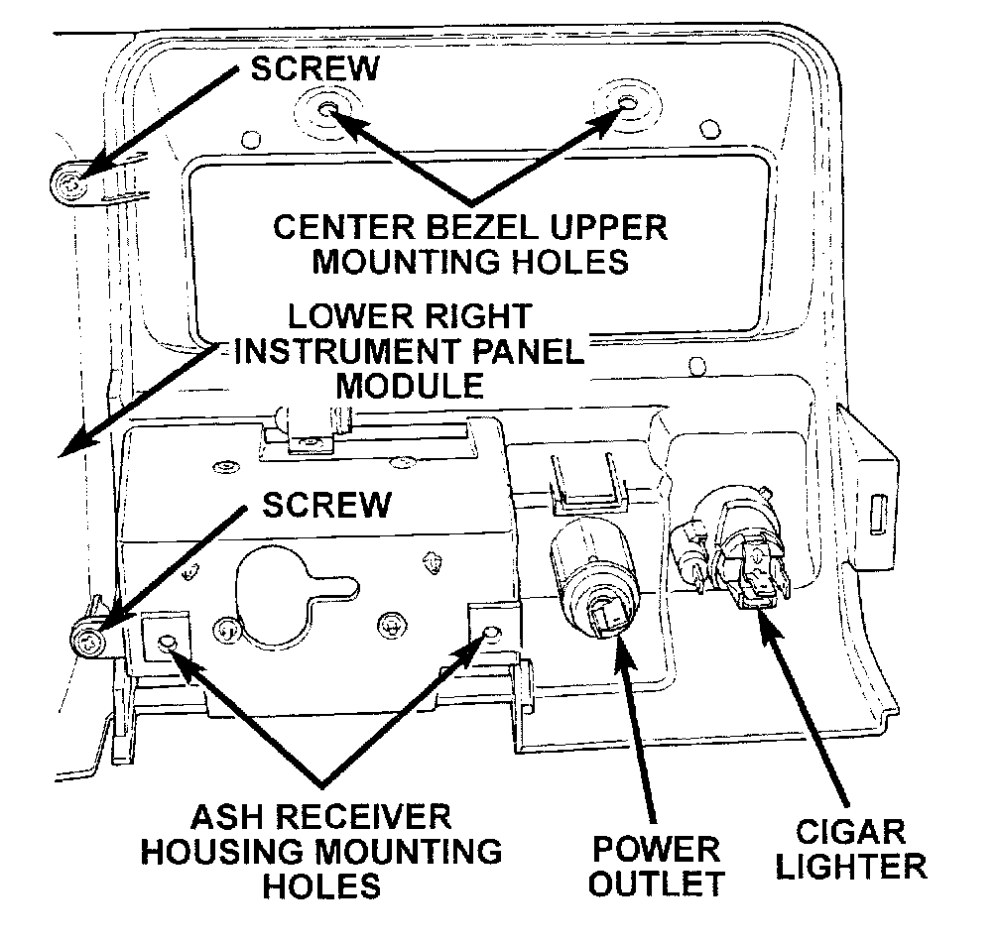

Instrument Panel Center Bezel
INSTRUMENT PANEL CENTER BEZELWARNING: ON VEHICLES EQUIPPED WITH AIRBAGS, REFER TO PASSIVE RESTRAINT SYSTEMS BEFORE ATTEMPTING STEERING WHEEL, STEERING COLUMN, OR INSTRUMENT PANEL COMPONENT DIAGNOSIS OR SERVICE. FAILURE TO TAKE THE PROPER PRECAUTIONS COULD RESULT IN ACCIDENTAL AIRBAG DEPLOYMENT AND POSSIBLE PERSONAL INJURY.
(1) Remove the lower right instrument panel module as described.
Center Bezel Remove/Install:

(2) From the rear of the lower right instrument panel module, remove the two screws securing the center bezel to the lower right module.
(3) Reverse the removal procedures to install.